WHAT TO DO IF AN ANTIBIOTIC DOES NOT SEEM TO HELP
For most common infections antibiotics begin to bring improvement in a day or two. If the antibiotic you are using does not seem to help, it is possible that:
1. The illness is not what you think. You may be using the wrong medicine. Try to find out more exactly what the illness is—and use the right medicine.
2. The dose of the antibiotic is not correct. Check it.
3. The bacteria have become resistant to this antibiotic (they no longer are harmed by it). Try another one of the antibiotics recommended for that illness.
4. You may not know enough to cure the illness. Get medical help, especially if the condition is serious or getting worse.
These three children had a cold...
What was
What took
Why did this child the villain?
the toll?
get well again?
He got no
Penicillin!
Chloramphenicol!
risky medicine—
(see Allergic
(see risks and precautions just fruit juice,
Shock, p. 70)
for this drug, p. 356)
good food, and rest.
Antibiotics do no good for the common cold.
Use antibiotics only for infections they are known to help.
IMPORTANCE OF LIMITED USE OF ANTIBIOTICS
The use of all medicines should be limited. But this is especially true of antibiotics, for the following reasons:
1. Poisoning and reactions. Antibiotics not only kill bacteria, they can also harm the body, either by poisoning it or by causing allergic reactions. Many people die each year because they take antibiotics they do not need.
2. Upsetting the natural balance. Not all bacteria in the body are harmful. Some are necessary for the body to function normally. Antibiotics often kill the good bacteria along with the harmful ones. Babies who are given antibiotics sometimes develop fungus or yeast infections of the mouth (thrush, p. 232) or skin (moniliasis, p. 242). This is because the antibiotics kill the bacteria that help keep fungus under control.
For similar reasons, persons who take ampicillin and other broad-spectrum antibiotics for several days may develop diarrhea. Antibiotics may kill some kinds of bacteria necessary for digestion, upsetting the natural balance of bacteria in the gut.
3. Resistance to treatment. In the long run, the most important reason the use of antibiotics should be limited, is that WHEN ANTIBIOTICS ARE USED TOO MUCH,
THEY BECOME LESS EFFECTIVE.
When attacked many times by the same antibiotic, bacteria become stronger and are no longer killed by it. They become resistant to the antibiotic. For this reason, certain dangerous diseases like typhoid are becoming more difficult to treat than they were a few years ago.
In some places typhoid has become resistant to chloramphenicol, normally the best medicine for treating it. Chloramphenicol has been used far too much for minor infections, infections for which other antibiotics would be safer and work as well, or for which no antibiotic at all is needed.
Throughout the world important diseases are becoming resistant to antibiotics— largely because antibiotics are used too much for minor infections. If antibiotics are to continue to save lives, their use must be much more limited than it is at present. This will depend on their wise use by doctors, health workers, and the people themselves.
For most minor infections antibiotics are not needed and should not be used.
Minor skin infections can usually be successfully treated with mild soap and water, or hot soaks, and perhaps painting them with gentian violet (p. 370). Minor respiratory infections are best treated by drinking lots of liquids, eating good food, and getting plenty of rest. For most diarrheas, antibiotics are not necessary and may even be harmful. What is most important is to drink lots of liquids (p. 155), and provide enough food as soon as the child will eat.
Do not use antibiotics for infections the body can fight successfully by itself. Save them for when they are most needed.
For more information on learning to use antibiotics sensibly, see Helping Health
Workers Learn, Chapter 19.
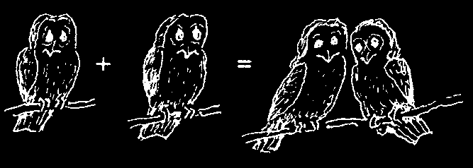


CHAPTER
How to Measure and Give Medicine
SYMBOLS:
= means: is equal to or is the same as
+ means: and or plus
1 + 1 = 2
One plus one equals two.
HOW FRACTIONS ARE SOMETIMES WRITTEN:
1 tablet = one whole tablet =
1/2 tablet = half of a tablet =
1 1/2 tablet = one and one-half tablets =
1/4 tablet = one quarter, or one-fourth of a tablet =
1/8 tablet = one-eighth of a tablet (dividing it into 8 equal pieces and taking 1 piece) =
MEASURING
Medicine is usually weighed in grams (g.) and milligrams (mg.).
1000 mg. = 1 g. (one thousand milligrams make one gram)
1 mg. =.001 g. (one milligram is one one-thousandth part of a gram)
Examples:
One adult aspirin
.3 g.
All these are tablet contains
0.3 g.
different ways
300 milligrams
0.300 g.
of saying 300 of aspirin.
300 mg.
milligrams.
One baby aspirin
.075 g.
All these are contains 75 milligrams
0.075 g.
different ways of aspirin.
75.0 mg.
of saying 75
75 mg.
milligrams.
Note: In some countries some medicines are still weighed in grains; gr. = grain and
1 gr. = 65 mg. This means a 5 gr. aspirin tablet weighs about 300 mg.
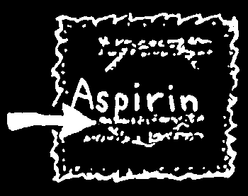
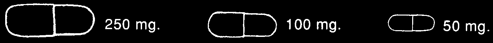

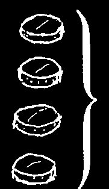
Many times it is important to know how many grams or milligrams are in a medicine.
For example, if you want to give a small piece of adult aspirin to a child, instead of baby aspirin, but you do not know how big a piece to give...
read the small print on the labels of each.
It says: aspirin: acetylsalicylic acid.3 g.
(acetylsalicylic acid = aspirin)
.3 g. = 300 mg. and.075 g. = 75 mg. So, you can see that one adult aspirin weighs 4 times as much as one baby aspirin.
75 mg.
If you cut the adult aspirin
75 mg.
into 4 equal pieces,
4 baby aspirins
75 mg.
each quarter = one baby aspirin add up to
75 mg.
300 mg.
1 regular aspirin
So if you cut an adult aspirin into 4 pieces, you can give the child 1 piece in place of a baby aspirin. Both are equal, and the piece of adult aspirin costs less.
CAUTION: Many medicines, especially the antibiotics, come in different weights and sizes. For example, tetracycline may come in 3 sizes of capsules:
Be careful to only give medicine in the recommended amounts. It is very important to check how many grams or milligrams the medicine contains.
For example: if the prescription says: Take tetracycline, 1 capsule of 250 mg. 4 times a day, and you have only 50 mg. capsules, you have to take five 50 mg. capsules 4 times a day (20 capsules a day).
50 mg. +
50 mg. +
50 mg. +
50 mg. + 50 mg. =
250 mg.
MEASURING PENICILLIN
Penicillin is often measured in units.
U. = unit
1,600,000 U. = 1 g. or 1,000 mg.
Many forms of penicillin (pills and injections) come in doses of 400,000 U.
400,000 U. = 250 mg.
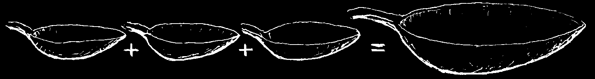


MEDICINE IN LIQUID FORM
Syrups, suspensions, tonics, and other liquid medicines are measured in milliliters:
ml. = milliliter
1 liter = 1000 ml.
Often liquid medicines are prescribed in tablespoons or teaspoons:
1 teaspoon (tsp.) = 5 ml.
1 tablespoon (Tbs.) = 15 ml.
3 teaspoons =
1 tablespoon
When instructions for a medicine say: Take 1 tsp., this means take 5 ml.
Many of the 'teaspoons’ people use hold as much as 8 ml. or as little as 3 ml.
When using a teaspoon to give medicine, it is important that it measure 5 ml. —
No more. No less.
How to Make Sure that the Teaspoon Used for Medicine Measures 5 ml.
1. Buy a 5 ml.
measuring spoon.
or
2. Buy a medicine that comes with a plastic spoon. This measures 5 ml. when it is full and may also have a line that shows when it is half full (2.5 ml.). Save this spoon and use it to measure other medicines.
or
5 ml.
3. Fill any small spoon that you have at home with 5 ml. of water, using a syringe or something else to measure, and make a mark on the spoon at the level of the liquid.
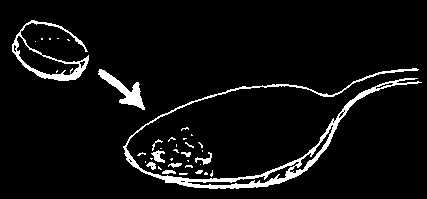

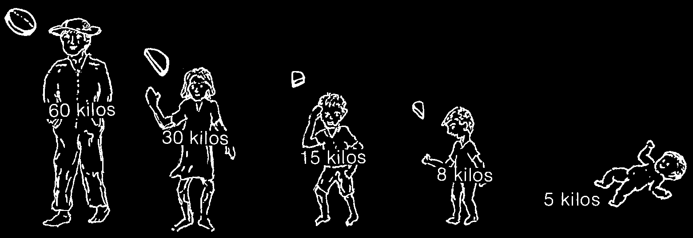
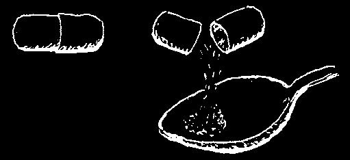
HOW TO GIVE MEDICINES TO SMALL CHILDREN
Many medicines that come as pills or capsules also come in syrups or suspensions
(special liquid form) for children. If you compare the amount of medicine you get, the syrups are usually more expensive than pills or capsules. You can save money by making your own syrup in the following way:
Grind up the cool boiled pill very well sugar water or honey and mix the powder with boiled water or open the capsule
(that has cooled)
and sugar or honey.
You must add lots of sugar or honey when the medicine is very bitter
(tetracycline or chloroquine).
When making syrups for children from pills or capsules, be very careful not to give too much medicine. Also, do not give honey to babies under 1 year of age. Though it is rare, some babies can have a dangerous reaction.
CAUTION: To prevent choking, do not give medicines to a child while she is lying on her back, or if her head is pressed back. Always make sure she is sitting up or that her head is lifted forward. Never give medicines by mouth to a child while she is having a fit, or while she is asleep or unconscious.
HOW MUCH MEDICINE SHOULD YOU GIVE TO CHILDREN
WHEN YOU ONLY HAVE THE INSTRUCTIONS FOR ADULTS?
Generally, the smaller the child, the less medicine he needs. Giving more than needed can be dangerous. If you have information about the doses for children, follow it carefully. If you do not know the dose, figure it out by using the weight or age of the child. Children should generally be given the following portions of the adult dose:
Adults:
1 dose
Children
8 to 13 years:
Children
Give a child under
1/2 dose
4 to 7 years:
1 year old the
1/4 dose
Children dose for a child
1 to 3 years:
of 1 year, but ask
1/8 dose medical advice when possible.
132 lbs.
66 lbs.
33 lbs.
17.6 lbs.
11 lbs.
1 kilogram (kg.) = 2.2 pounds (lbs.)


HOW TO TAKE MEDICINES
It is important to take medicines more or less at the time recommended. Some medicines should be taken only once a day, but others must be taken more often. If you do not have a clock, it does not matter. If the directions say '1 pill every
8 hours’, take 3 a day: one in the morning, one in the afternoon, and one at night. If they say '1 pill every 6 hours’, take 4 each day: one in the morning, one at midday, one in the afternoon, and one at night. If the directions are '1 every 4 hours’, take 6 a day, allowing more or less the same time between pills.
Whenever you give a medicine to someone else, it is a good idea to write the instructions and also to have the person repeat to you how and when to take the medicine. Make very sure he understands.
To remind people who cannot read when to take their medicine, you can give them a note like this
In the blanks at the bottom draw the amount of medicine they should take and carefully explain what it means.
For example:
This means 1 tablet 4 times a day,
1 at sunrise, 1 at noon, 1 at sunset, and
1 in the middle of the night.
This means 1/2 tablet 4 times a day.
This means 1 capsule 3 times a day.
This means 1/4 tablet twice a day.
This means 2 teaspoons twice a day.
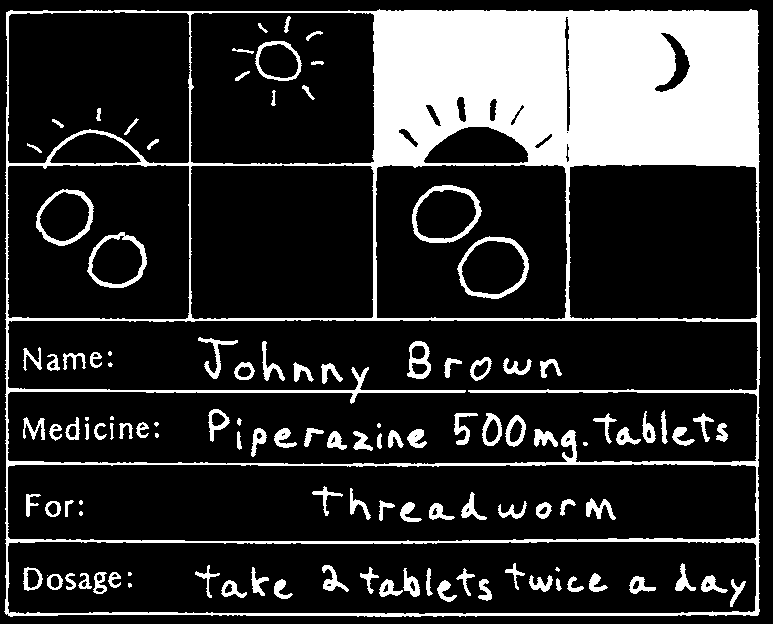
WHEN YOU GIVE MEDICINES
TO ANYONE...
Always write all the following information on the note with the medicine—even if the person cannot read:
• the person’s name
• the name of the medicine
• what it is for
• the dosage
This information can be put on the same note as the drawing for dosage.
A page of these dosage blanks is included at the end of the book. Cut them out and use them as needed. When you run out, you can make more yourself.
When you give medicine to someone, it is a good idea to keep a record of this same information. If possible, keep a complete Patient report (see p. 44).
TAKING MEDICINES ON A FULL OR EMPTY STOMACH
Some medicines work best when you take them when the stomach is empty—that is, one hour before meals.
Other medicines are less likely to cause upset stomach or heartburn (chest pain)
when taken along with a meal or right afterwards.
Take these medicines
Take these medicines
1 hour before meals:
together with or soon after meals (or with a lot of water):
• penicillin
• aspirin and medicine that
• ampicillin contains aspirin
• tetracycline
• iron (ferrous sulfate)
• vitamins
It is better not to drink milk an
• erythromycin hour before or after taking tetracycline.
Antacids do the most good if you take them when the stomach is empty, 1 or 2 hours after meals and at bedtime.
Note: It is best to take medicines while you are standing or sitting up. Also, try to drink a glass of water each time you take a medicine. If you are taking a sulfa medicine, it is important to drink lots of water, at least 8 glasses a day, to prevent harm to the kidneys.
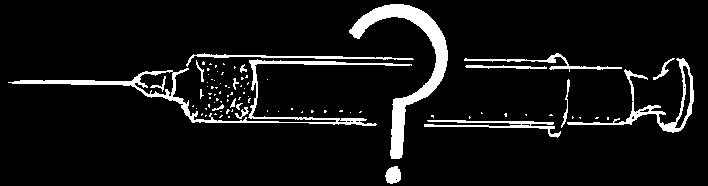
CHAPTER
Instructions and Precautions for Injections
WHEN TO INJECT AND WHEN NOT TO
Injections are not needed often. Most sicknesses that require medical treatment can be treated as well or better with medicines taken by mouth. Each year, millions of people—especially children—become ill, disabled, or die as a result of unnecessary injections. Combating misuse and overuse of medicines is as important to good health as vaccination, clean water, or the correct use of latrines.
As a general rule:
It is more dangerous to inject medicine than to take it by mouth.
Injections should be used only when absolutely necessary. Except in emergencies, they should be given only by health workers or persons trained in their use.
The only times medicines should be injected are:
1. When the recommended medicine does not come in a form that can be taken by mouth.
2. When the person vomits often, cannot swallow, or is unconscious.
3. In certain unusual emergencies and special cases (see the next page).
WHAT TO DO WHEN THE DOCTOR PRESCRIBES INJECTIONS
Doctors and other health workers sometimes prescribe injections when they are not needed. After all, they can charge more money for injections. They forget the problems and dangers of giving injections in rural areas.
1. If a health worker or healer wants to give you an injection, be sure the medicine is appropriate and that she takes all the necessary precautions.
2. If a doctor prescribes injections, explain that you live where no one is well trained to give injections and ask if it would be possible to prescribe a medicine to take by mouth.
3. If a doctor wants to prescribe injections of vitamins, liver extract, or vitamin
B12, but has not had your blood tested, tell him you would prefer to see another doctor.
EMERGENCIES WHEN IT IS IMPORTANT TO GIVE INJECTIONS
In case of the following sicknesses, get medical help as fast as you can. If there will be any delay in getting help or in taking the sick person to a health center, inject the appropriate medicine as soon as possible. For details of the doses, consult the pages listed below. Before injecting, know the possible side effects and take the needed precautions (see the Green Pages).
For these sicknesses
Inject these medicines
Severe pneumonia (p. 171)
penicillin in high doses (p. 351)
Gangrene (p. 213)
Infections after childbirth (p. 276)
ampicillin (p. 352)
and gentamicin (p.358) taken with metronidazole by mouth (p. 368).
Tetanus (p. 182)
penicillin (p. 351)
and tetanus antitoxin (p. 388)
Appendicitis (p. 93-94)
ampicillin in high doses (p. 352) or
Peritonitis (p. 93-94) and bullet wound penicillin (p. 352)
or other puncture wound in the belly
Poisonous snakebite (p. 105)
antitoxins and antivenom (p. 387)
Scorpion sting (in children, p. 106)
Meningitis (p. 185) when you ampicillin (p. 352 and 353)
do not suspect tuberculosis
Meningitis (p. 185)
ampicillin together with when you suspect tuberculosis streptomycin (p. 353) and, if possible, other TB medicines (p. 359)
Vomiting (p. 161) when it antihistamines, for example, cannot be controlled promethazine (p. 385)
Severe allergic reaction and epinephrine (Adrenalin, p. 385)
allergic shock (p. 70)
and, if possible, diphenhydramine
(Benadryl, p. 386).
The following chronic illnesses may require injections, but they are rarely emergencies. It is best to consult a health worker for treatment.
Tuberculosis (p. 179 and 180)
streptomycin (p. 361) together with other TB medicines (p. 359)
Syphilis (p. 237)
benzathine penicillin in very high doses (p. 238 and 352)
Gonorrhea (p. 236)
ceftriaxone (p. 359)
spectinomycin (p. 359)
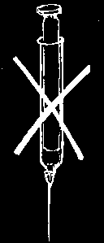
WHEN NOT TO INJECT:
Never give injections if you can get medical help quickly.
Never give an injection for a sickness that is not serious.
Never give injections for a cold or the flu.
Never inject a medicine that is not recommended for the illness you want to treat.
Never give an injection unless your needle has been boiled or sterilized.
Never inject a medicine unless you know and take all the recommended precautions.
MEDICINES NOT TO INJECT
In general, it is better never to inject the following:
1. Vitamins. Rarely are injected vitamins any better than vitamins taken by mouth. Injections are more expensive and more dangerous. Use vitamin pills or syrups rather than injections. Better still, eat foods rich in vitamins (see p. 111).
2. Liver extract, vitamin B12, and iron injections (such as Inferon). Injecting these can cause abscesses or dangerous reactions (shock, p. 70). Ferrous sulfate pills will do more good for almost all cases of anemia (p. 392).
3. Calcium. Injected into a vein calcium is extremely dangerous, if not given very slowly. An injection in the buttock may cause a large abscess. Untrained people should never inject calcium.
4. Penicillin. Nearly all infections that require penicillin can be effectively treated with penicillin taken by mouth. Penicillin is more dangerous when injected. Use injectable penicillin only for dangerous infections.
5. Penicillin with streptomycin. As a general rule, avoid this combined medicine. Never use it for colds or the flu because it does not work. It can cause serious problems sometimes deafness or death. Also, overuse makes it more difficult to cure tuberculosis or other serious illness.
6. Chloramphenicol or tetracycline. These medicines do as much or more good when taken by mouth. Use capsules or syrups rather than injections (p. 355 and 356).
7. Intravenous (I.V.) solutions. These should be used only for severe dehydration and given only by someone who is well trained. When not given correctly they can cause dangerous infections or death (p. 53).
8. Intravenous medicines. There is so much danger in injecting any medicine in the vein that only well trained health workers should do it. However, never inject into a muscle (the buttock) medicine that says 'for intravenous use only’. Also, never inject in the vein medicine that says 'for intramuscular use only’.

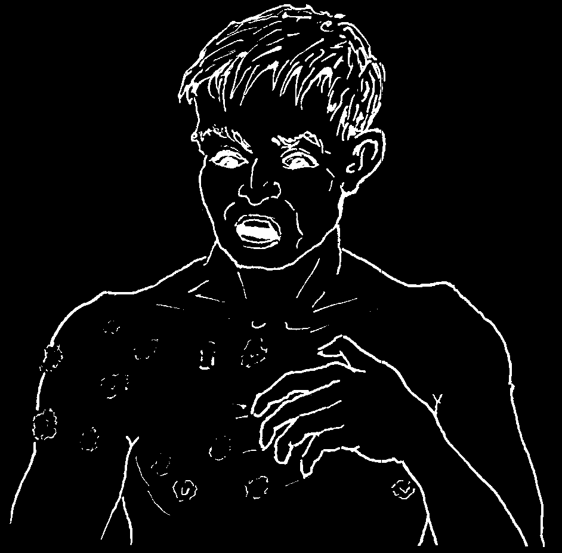
RISKS AND PRECAUTIONS
The risks of injecting any medicines are (1) infection caused by germs entering with the needle and (2) allergic or poisonous reactions caused by the medicine.
1. To lower the chance of infection when injecting, take great care that everything is completely clean. It is very important to boil the needle and syringe before injecting. After boiling, do not touch the needle with your fingers or with anything else.
Never use the same needle and syringe to inject more than one person without boiling it again first. Carefully follow all of the instructions for injecting (see following pages).
Be sure to wash your hands well before
An abscess like this one comes from preparing or giving injections.
injecting with a needle that has not been well boiled and is not sterile
(completely clean and germ free).
2. It is very important to know what reactions a medicine can produce and to take the recommended precautions before injecting.
If any of the following signs of allergic or poisonous reaction appear, never give the same or similar medicine again:
• hives (patchy swellings on skin)
or a rash with itching
• swelling anywhere
• difficulty breathing
• signs of shock (see p. 70)
• dizzy spells with nausea
(wanting to vomit)
• problems with vision
• ringing in the ears or deafness
• severe back pain
• difficulty urinating
Hives, or a rash with itching, can appear a few hours or up to several days after getting an injection. If the same medicine is given to the person again, it may cause a very severe reaction or even death (see p. 70).


This child was injected with a needle that was not sterile (boiled and completely free of germs).
The dirty needle caused an infection that produced a large, painful abscess (pocket of pus) and gave the child a fever. Finally, the abscess burst as shown in the picture below.
This child was injected for a cold. It would have been far better to give him no medicine at all. Rather than doing good, the injection caused the child suffering and harm.
CAUTION: If possible, always give medicine by mouth instead of by injection especially to children.
To avoid problems like these:
Inject only when absolutely necessary.
♦ Boil the syringe and needle just before giving the injection and be very careful to keep them completely clean.
♦ Use only the medicine recommended for the disease and be sure it is still in good condition and not spoiled.
♦ Inject in the correct place.
Do not inject infants and small children in the buttock.
Instead, inject them in the upper, outer part of the thigh. (Notice that this child was injected too low on the buttock, where it is possible to damage the nerve.)


DANGEROUS REACTIONS FROM INJECTING CERTAIN MEDICINES
The following groups of medicines sometimes produce a dangerous reaction called
ALLERGIC SHOCK a short time after injection:
• penicillins (including ampicillin)
scorpion antivenom
• antitoxins that are made from horse serum snake antivenom
{tetanus antitoxin
The risk of a serious reaction is greater in a person who has previously been injected with one of these medicines or with another medicine of the same group. This risk is especially great if the medicine caused an allergic reaction (hives, rash, itching, swelling, or trouble breathing) a few hours or days after the injection was given.
Rarely, ALLERGIC SHOCK may result from the sting of a wasp or bee or from medicine taken by mouth.
To prevent a serious reaction from an injection:
1. Use injections only when absolutely necessary.
2. Before injecting one of the medicines listed above, always have ready 2 ampules of epinephrine (Adrenalin, p. 385) and an ampule of an antihistamine like promethazine
(Phenergan, p. 385) or diphenhydramine (Benadryl, p. 386).
3. Before injecting, always ask if at any other time a similar injection caused itching or other reactions. If the person says yes, do not use this medicine or any other medicine of the same group, either injected or taken by mouth.
4. In very serious cases, like tetanus or snakebite, if there is a good chance that the antitoxin might produce an allergic reaction (if the person suffers from allergies or asthma or has had horse serum before), inject promethazine or diphenhydramine
15 minutes before giving the antitoxin: adults, 25 to 50 mg.; children, 10 to 25 mg., depending on their size (see p. 386).
5. After injecting any medicine, always stay with the person for 30 minutes to watch for any of the following signs of ALLERGIC SHOCK:
• cool, moist, pale, gray skin (cold sweat)
• weak, rapid pulse or heartbeat
• difficulty breathing
• loss of consciousness
6. If these signs appear, immediately inject epinephrine (Adrenalin): adults, 1/2 ml.;
children, 1/3 to 1/4 ml, depending on their size. Treat the person for SHOCK (see p. 77).
Follow by giving an antihistamine in double the normal dose.

How to Avoid Serious Reactions to a Penicillin Injection
1. For mild to moderate infections:
2. Before injecting ask the person:
“Have you ever had a rash, itching, swelling, give penicillin pills or trouble breathing after getting an injection of penicillin?”
instead of injections
If the answer is yes, do not use penicillin, ampicillin, or amoxicillin. Use another antibiotic like erythromycin (p. 354) or a sulfonamide (p. 356).
3. Before injecting penicillin:
4. After injecting:
always have ampules of EPINEPHRINE
(Adrenalin) ready.
stay with the person for at least 30 minutes.
5. If the person becomes very pale, his heart beats very fast, he has difficulty breathing, or he starts to faint, immediately inject into a muscle (or just under the skin) half an ampule of EPINEPHRINE (Adrenalin, a quarter of an ampule in small children) and repeat in 10 minutes if necessary.
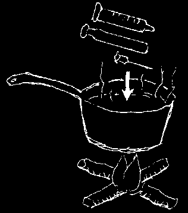
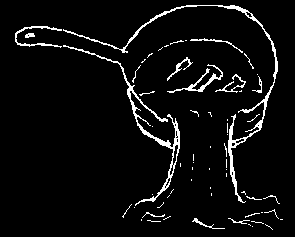
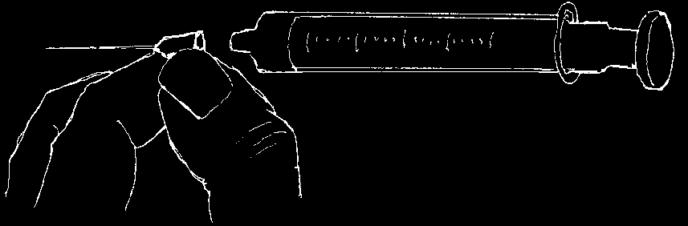
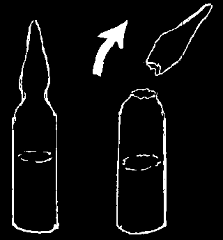